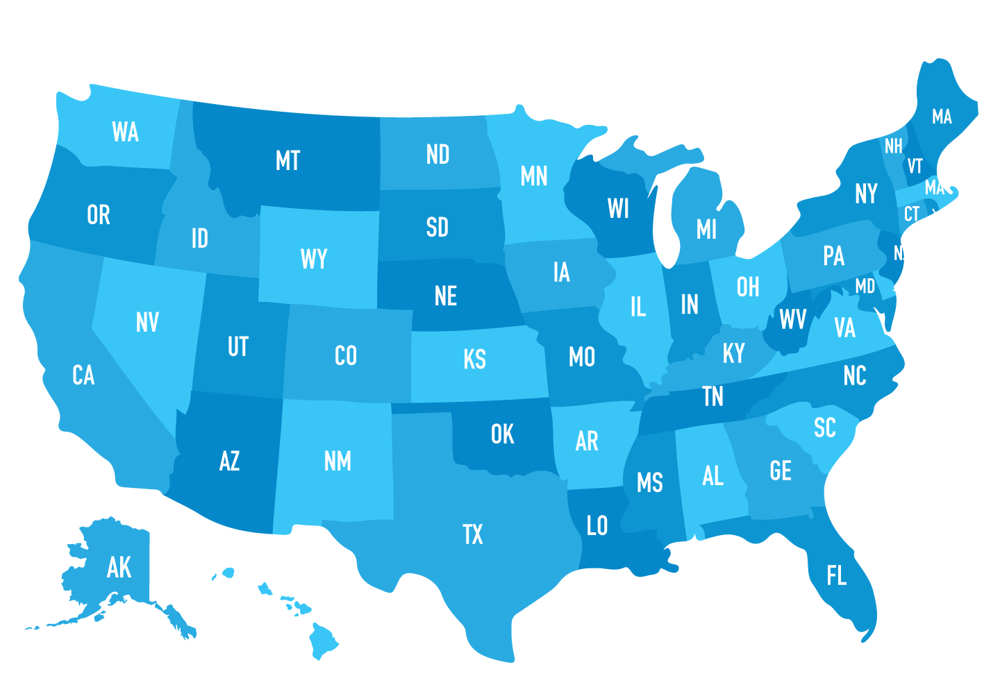
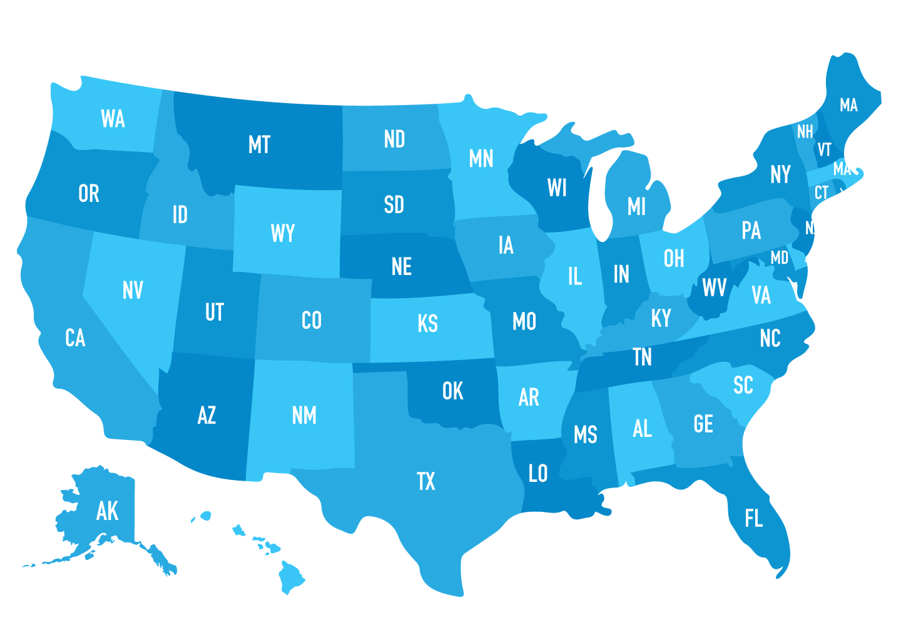

You’ve made it! We’re at the “end” of U.S. History (for your curriculum anyway since we’re living the history now). This includes the last few decades of the 20th century and leads into current events. This isn’t an area that is too heavily focused on (AP: This is only 5% of your exam so don’t stress out too much about this time period).
Period 9 includes the major events such as the time after the Cold War, the War on Terrorism, and all current events leading to present-day America.
The 1980s saw the rise in conservatism. After the liberal movement of the 60s and 70s, many citizens strayed away from the left and found themselves supporting the right.
- Denounced ideas like abortion, feminism, and homosexuality
- Rise in evangelical and fundamentalist Christian churches and organizations
- Increased political participation by these people
- Burger Court
- Warren Burger took over Earl Warren’s role as chief justice
- “New Right” Movement in response to the Stormy Sixties
With the New Right Movement, conservatives pushed to limit the power of the government by trying to cut down on big government.
- Reduced funding in social programs from the New Deal and Great Society
- Supply-side economics
- Reduce individual taxes and increasing money available for investment
- Deregularization of businesses
- Economic Recovery Tax Act 1981
- Cut income taxes over the course of three years by 25%
- However, many social programs remained popular
- President Reagan put more funding towards military (increased government spending)
- Income gap grew
The attempt to cut down on big government was not very effective as many social programs remained popular and new acts were passed to further their progression.
- No Child Left Behind Act 2002
- Medicare Modernization Act 2003
- Patient Protection and Affordable Care Act [Obamacare] 2010
Another major event of this era is the end of the Cold War. By the end of the 1980s, the conflict was subdued and the Cold War was no longer an issue.
- President Reagan rejected policy of detente (President Nixon’s approach)
- Approached the war with a more aggressive stance and increased military spending
- Strategic Defense Initiative [Star Wars]
- An idea to build satellite weapons in space to target nations but was discontinued
- Strategic Arms Reduction Talks [START]
- Plan to draft treaties with Soviet Union in hopes of reducing number of nukes and delivery systems
- Mikhail Gorbachev
- Assumed power in the Soviet Union in 1985
- Lessened tensions between the U.S. and U.S.S.R.
- Iran-Contra Scandal 1987
- President Reagan administration sold weapons to the anti-American government in Iran to help secure release of hostages
- Intermediate Nuclear Force Treaty (1987)
- Ban all intermediate-range nuclear forces in Europe
- Fall of Berlin Wall in 1989
However, foreign issues didn’t end with the Cold War. Problems arose in the Middle East and America continued to be involved in foreign policy.
- Persian Gulf War 1991
- Dayton Agreement 1995
- Three rival ethnic groups in Bosnia pledged to end a four year civil war
- Bombing of Yugoslavia 1999
- NATO bombings led to withdrawal of Yugoslav forces from Kosovo and put an end to Yugoslav Wars of 1990s
- North American Free Trade Agreement [NAFTA] 1993
- Eliminated most tariffs and other trade barriers between US, Canada, and Mexico
- World Trade Agreement [WTO]
Foreign issues continued to develop with the rising of terrorist groups in the Middle East and a major attack on the United States.
- Al Qaeda
- Established by Saudi Osama bin Laden in 1989
- Taliban
- Muslim fundamentalists that gained control of Afghanistan in 1996
- September 11, 2001 [9/11]
- Four planes were hijacked by the terrorist group Al Qaeda
- Two planes crashed into the World Trade Center
- One plane crashed into the Pentagon
- One planed crashed into a field in Pennsylvania as the passengers prevented it from going to its intended location
Environmentalism grew into a greater issue as climate change became an increasingly large problem. Policies were made to try and combat this problem.
- Kyoto Protocol 1997
- Paris Agreement 2015
- Further reduce emission rates
- Major countries like China and the United States signed the agreement
We can’t talk about America without talking about immigration. Here are some acts that were passed during this period.
- Immigration Reform and Control Act of 1986
- Can’t hire undocumented foreigners
- Immigration Act of 1990
- Reformed Immigration Act of 1965, increasing amount of immigrants
Civil Rights continued to push on as gay rights progressed, especially in the 2010s.
- Don’t Ask, Don’t Tell 1994
- Prohibit discrimination in military personnel against closeted LGBTQ+ people
- Barred openly gay people from joining
- This act was repealed in 2010 by President Obama and opened up the military to the LGBTQ+ community.
- Defense of Marriage Act 1996
- Defined marriage as legal contract between a man and women
- United States v. Windsor 2013
- Unconstitutional for the government to deny federal benefits of marriage to same-sex couples
- Obergefell v. Hodges 2015
- The fundamental right to marry is guaranteed to same-sex couples due to the Equal Protection Clause
Bottom Line: While the Cold War ended, new foreign problems arose, such as issues with terrorism and wars with the Middle East.
The age of liberalism made a shift as the conservative movement took over.
Social programs and civil rights, particularly for the LGBTQ+ community, have been and are continuing to make progress.
 
